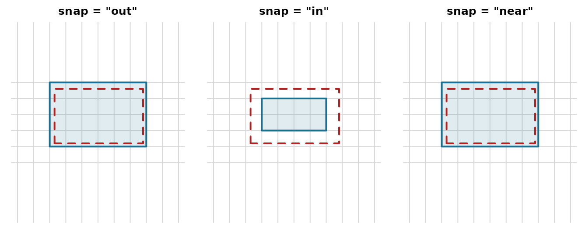

Overview
When working with raster data, you often need to align arbitrary extents to a grid’s cell boundaries. This is essential for:
- Cropping rasters to a region of interest
- Mosaicking multiple rasters with consistent alignment
- Preparing data for analysis that requires aligned grids
The vaster package provides functions to compute these alignments without requiring actual raster data.
The Alignment Problem
Consider a 10x5 grid with 1-unit cells:
dimension <- c(10, 5)
extent <- c(0, 10, 0, 5)
## Cell boundaries are at integers
x_corner(dimension, extent)
#> [1] 0 1 2 3 4 5 6 7 8 9 10
y_corner(dimension, extent)
#> [1] 0 1 2 3 4 5If you want to crop to an arbitrary extent like
c(2.3, 7.8, 1.2, 4.6), the boundaries don’t align with cell
edges. You need to decide how to snap to the nearest cell
boundaries.
align_extent()
The align_extent() function snaps an arbitrary extent to
align with the grid’s cell boundaries:
user_extent <- c(2.3, 7.8, 1.2, 4.6)
## Snap outward (default) - includes all cells touched
align_extent(user_extent, dimension, extent, snap = "out")
#> [1] 2 8 1 5
## Snap inward - only fully contained cells
align_extent(user_extent, dimension, extent, snap = "in")
#> [1] 3 7 2 4
## Snap to nearest boundary
align_extent(user_extent, dimension, extent, snap = "near")
#> [1] 2 8 1 5The three modes differ in which way the boundary moves relative to
the requested extent (dashed red): "out" grows to enclose
every touched cell, "in" shrinks to only fully covered
cells, and "near" rounds each edge to the closest
boundary.
op <- par(mfrow = c(1, 3), mar = c(1, 1, 2, 1))
for (mode in c("out", "in", "near")) {
a <- align_extent(user_extent, dimension, extent, snap = mode)
plot(NA, xlim = extent[1:2], ylim = extent[3:4], asp = 1,
axes = FALSE, xlab = "", ylab = "", main = sprintf('snap = "%s"', mode))
abline(v = x_corner(dimension, extent), h = y_corner(dimension, extent), col = "grey85")
rect(a[1], a[3], a[2], a[4], col = "#1C6E8C22", border = "#1C6E8C", lwd = 2)
rect(user_extent[1], user_extent[3], user_extent[2], user_extent[4],
border = "firebrick", lty = 2, lwd = 2)
}
par(op)snap_extent()
The snap_extent() function provides a simpler alignment
to a fixed resolution, without reference to a specific grid:
## Snap to 0.5 unit resolution
snap_extent(c(2.3, 7.8, 1.2, 4.6), res = 0.5)
#> [1] 2 8 1 5
## Snap to 1 unit resolution
snap_extent(c(2.3, 7.8, 1.2, 4.6), res = 1)
#> [1] 2 8 1 5This always snaps outward (buffering the extent).
Grid Origin
The origin() function returns the grid’s alignment
origin - the point where cell boundaries would intersect if the grid
extended infinitely:
## Standard grid has origin at (0, 0)
origin(c(10, 5), c(0, 10, 0, 5))
#> [1] 0 0
## Offset grid
origin(c(10, 5), c(0.5, 10.5, 0.25, 5.25))
#> [1] 0.50 0.25Two grids with the same resolution and origin will have aligned cells.
vcrop()
The vcrop() function performs a virtual crop operation,
returning both the aligned extent and the dimension of the cropped
region:
result <- vcrop(c(2.3, 7.8, 1.2, 4.6), dimension, extent)
result$extent
#> [1] 2 8 1 5
result$dimension
#> [1] 6 4This is useful when you need to know the output dimensions before actually reading data.
intersect_extent()
Find the overlapping region between an extent and a grid:
## Extent that partially overlaps
intersect_extent(c(-2, 5, -1, 3), dimension, extent)
#> [1] -2 5 -1 3
## Extent fully within grid
intersect_extent(c(2, 8, 1, 4), dimension, extent)
#> [1] 2 8 1 4extent_dimension()
Calculate what dimension a cropped region would have:
crop_extent <- c(2, 8, 1, 4)
## Dimension of the cropped region
extent_dimension(crop_extent, dimension, extent)
#> [1] 6 3
## Verify: 6 columns (8-2) and 3 rows (4-1)Practical Example: Pre-computing Crop Parameters
A common workflow is to pre-compute crop parameters before reading data:
## Define source grid (e.g., from a large raster file)
src_dim <- c(3600, 1800) # 0.1 degree global grid
src_ext <- c(-180, 180, -90, 90)
## User's region of interest
roi <- c(140, 155, -45, -30) # Southeastern Australia
## Align to grid
aligned_roi <- align_extent(roi, src_dim, src_ext, snap = "out")
aligned_roi
#> [1] 140 155 -45 -30
## Get dimensions of cropped region
crop_dim <- extent_dimension(aligned_roi, src_dim, src_ext)
crop_dim
#> [1] 150 150
## Get cell indices to read
cells <- cell_from_extent(src_dim, src_ext, aligned_roi)
length(cells)
#> [1] 22500
## Verify
crop_dim[1] * crop_dim[2]
#> [1] 22500GDAL Integration
The aligned extent can be converted to GDAL parameters:
## RasterIO parameters for reading the crop region
rio <- rasterio0(src_dim, src_ext, aligned_roi)
rio
#> offset_x offset_y source_nx source_ny out_nx out_ny <NA> <NA>
#> 3600 1800 -180 180 -90 90 140 155
#> <NA> <NA>
#> -45 -30
#> attr(,"resample")
#> [1] "NearestNeighbour"This tells GDAL which pixels to read: starting at column/row offset, reading a window of specified size.
Summary
| Function | Purpose |
|---|---|
align_extent() |
Snap extent to grid boundaries (out/in/near) |
snap_extent() |
Snap extent to resolution (always outward) |
origin() |
Get grid alignment origin |
vcrop() |
Virtual crop: get aligned extent and dimension |
intersect_extent() |
Find overlapping region |
extent_dimension() |
Calculate dimension of aligned extent |